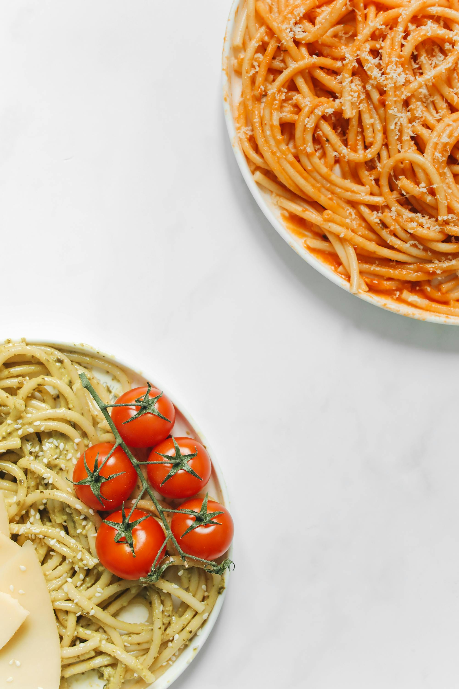

Home
Pasta

Description
This pasta is rich, creamy, and packed with flavor from fresh garlic and nutty Parmesan cheese. It’s a one-pan wonder that feels indulgent but comes together in under 30 minutes. Perfect as a main dish or a side to grilled chicken or shrimp.
Ingredients
- 12 oz fettuccine or pasta of choice
- 2 tablespoons unsalted butter
- 4 cloves garlic, minced
- 2 cups heavy cream (or half-and-half for a lighter version)
- 1 cup freshly grated Parmesan cheese
- Salt and freshly ground black pepper, to taste
- Optional: pinch of red pepper flakes
- Fresh parsley, chopped (for garnish)
Steps
- Bring a large pot of salted water to a boil. Cook pasta according to package instructions until al dente. Reserve 1 cup of pasta water, then drain.
- In a large skillet over medium heat, melt the butter. Add minced garlic and sauté for 1–2 minutes until fragrant (don’t let it brown).
- Pour in the cream and bring to a gentle simmer. Stir in the Parmesan cheese and whisk until melted and smooth. Season with salt, pepper, and red pepper flakes if using.
- Add the cooked pasta to the sauce and toss to coat. If the sauce is too thick, add a splash of reserved pasta water until it reaches your desired consistency.
- Plate the pasta and garnish with chopped parsley and extra Parmesan. Serve immediately.
Plate the pasta and garnish with chopped parsley and extra Parmesan. Serve immediately.